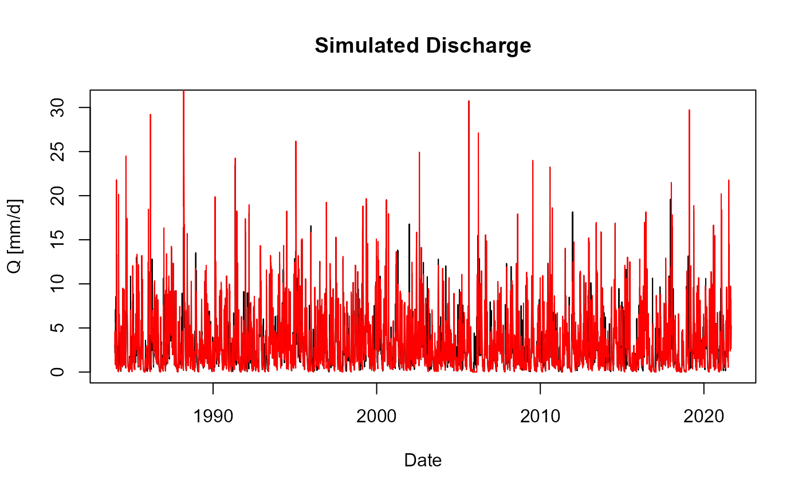

Couple a snow module to a hydrological model
include_snow_module.RmdThis vignette shows how to couple a hydrological model with a
hydrological model without a snow model. While snow,
TUW and the airGR models come with an own snow
module (the latter just with renaming the model from GR6J
to CemaNeigeGR6J), this needs a bit more coding within this
package (and can be done more integrated similar to the airGR package in the future).
Important new parts are in italic.
Preparations
Create a minimum input
# can be done as separate data set
minimum_input <- input_data %>%
filter(HSU_ID == "2303") %>%
select(DatesR, P, T, E)
minimum_basin_info <- basin_data[["2303"]]
# todo: delete HypsoData in general
minimum_basin_info$HypsoData <- NULL
# convert Date to POSIXct
# todo: put it into input_data already, but is also good to show it here
minimum_input$DatesR <- as.POSIXct(minimum_input$DatesR)
attr(minimum_input$DatesR, "tzone") <- "UTC"Choose a snow module and a hydrological model (without an own snow module)
cal_par <- default_cal_par # todo: this needs to be changed
snow_module <- "CemaNeige"
model <- "sacramento"Set model parameters
param <- (default_cal_par[[model]]$upper + default_cal_par[[model]]$lower) / 2
print(param)
#> uztwm uzfwm uzk pctim adimp zperc
#> 75.5000000 75.5000000 0.3000000 0.0500005 0.2000000 125.5000000
#> rexp lztwm lzfsm lzfpm lzsk lzpk
#> 2.5000000 250.5000000 500.5000000 500.5000000 0.1300000 0.1250500
#> pfree
#> 0.3000000Set snow module parameters
snow_param <- (default_cal_par[[snow_module]]$upper + default_cal_par[[snow_module]]$lower) / 2
print(snow_param)
#> [1] 0.50000 54.51825Create input
# todo: check on basin_info
input <- create_input(model, minimum_input, list()) %>%
suppressWarnings() %>% suppressMessages()Create snow input
snow_input <- create_input(snow_module, minimum_input, list()) %>%
suppressWarnings() %>% suppressMessages()Run the model without the snow module
sim <- simulate_model(model, param, input)Run the model with the snow module
Simulate snow module
# simulate snow module
snow_module_results <- simulate_snow(snow_module, snow_param, snow_input) %>%
suppressWarnings() %>% suppressMessages()Update precipitation with snow module surface water runoff
input$P <- snow_module_results$surface_water_runoffRun the model with updated input
sim_update <- simulate_model(model, param, input)Combine snow and runoff results (not required, just nice)
sim_update <- merge_snow_runoff_sim(sim_update, snow_module_results)The output contains now also the snow module results
SWE, psolid, pliquid and
melt, and more_info contains a list of 2, i.e
both the complete hydrological model and the snow module results with
all details directly from the original package output.
str(sim_update)
#> List of 9
#> $ date : Date[1:14853], format: "1981-01-01" "1981-01-02" ...
#> $ Qsim : num [1:14853] 48.9 42.7 38.6 32.5 28.4 ...
#> $ Qobs : NULL
#> $ SWE : num [1:14853] 6.05 13.87 15.07 37.63 46.31 ...
#> $ psolid : num [1:14853] 6.05 7.82 3.9 22.56 8.68 ...
#> $ pliquid : num [1:14853] 1.03 0 23.47 0 0 ...
#> $ melt : num [1:14853] 0 0 2.7 0 0 ...
#> $ more_info :List of 2
#> ..$ output_model:List of 2
#> .. ..$ init_model :List of 7
#> .. .. ..$ call : language hydromad::hydromad(DATA = NULL, sma = sma, routing = routing, uztwm = c(1, 150), uzfwm = c(1, 150), uzk = c(0.1,| __truncated__ ...
#> .. .. ..$ parlist :List of 13
#> .. .. .. ..$ uztwm: num [1:2] 1 150
#> .. .. .. ..$ uzfwm: num [1:2] 1 150
#> .. .. .. ..$ uzk : num [1:2] 0.1 0.5
#> .. .. .. ..$ pctim: num [1:2] 1e-06 1e-01
#> .. .. .. ..$ adimp: num [1:2] 0 0.4
#> .. .. .. ..$ zperc: num [1:2] 1 250
#> .. .. .. ..$ rexp : num [1:2] 0 5
#> .. .. .. ..$ lztwm: num [1:2] 1 500
#> .. .. .. ..$ lzfsm: num [1:2] 1 1000
#> .. .. .. ..$ lzfpm: num [1:2] 1 1000
#> .. .. .. ..$ lzsk : num [1:2] 0.01 0.25
#> .. .. .. ..$ lzpk : num [1:2] 0.0001 0.25
#> .. .. .. ..$ pfree: num [1:2] 0 0.6
#> .. .. ..$ last.updated: POSIXct[1:1], format: "2025-08-11 14:33:44"
#> .. .. ..$ sma : chr "sacramento"
#> .. .. ..$ sma.fun : chr "sacramento.sim"
#> .. .. ..$ sma.formals :Dotted pair list of 24
#> .. .. .. ..$ DATA : symbol
#> .. .. .. ..$ uztwm : symbol
#> .. .. .. ..$ uzfwm : symbol
#> .. .. .. ..$ uzk : symbol
#> .. .. .. ..$ pctim : symbol
#> .. .. .. ..$ adimp : symbol
#> .. .. .. ..$ zperc : symbol
#> .. .. .. ..$ rexp : symbol
#> .. .. .. ..$ lztwm : symbol
#> .. .. .. ..$ lzfsm : symbol
#> .. .. .. ..$ lzfpm : symbol
#> .. .. .. ..$ lzsk : symbol
#> .. .. .. ..$ lzpk : symbol
#> .. .. .. ..$ pfree : symbol
#> .. .. .. ..$ etmult : num 1
#> .. .. .. ..$ dt : num 1
#> .. .. .. ..$ uztwc_0 : num 0.5
#> .. .. .. ..$ uzfwc_0 : num 0.5
#> .. .. .. ..$ lztwc_0 : num 0.5
#> .. .. .. ..$ lzfsc_0 : num 0.5
#> .. .. .. ..$ lzfpc_0 : num 0.5
#> .. .. .. ..$ adimc_0 : num 0.5
#> .. .. .. ..$ min_ninc : num 20
#> .. .. .. ..$ return_state: logi FALSE
#> .. .. ..$ warmup : num 100
#> .. .. ..- attr(*, "class")= chr [1:2] "hydromad.sacramento" "hydromad"
#> .. ..$ fitted_model:List of 9
#> .. .. ..$ call : language hydromad::hydromad(DATA = (zoo::read.zoo(input[ind, ]))(), sma = sma, routing = routing, uztwm = 75.5, uzfwm| __truncated__ ...
#> .. .. ..$ parlist :List of 13
#> .. .. .. ..$ uztwm: num 75.5
#> .. .. .. ..$ uzfwm: num 75.5
#> .. .. .. ..$ uzk : num 0.3
#> .. .. .. ..$ pctim: num 0.05
#> .. .. .. ..$ adimp: num 0.2
#> .. .. .. ..$ zperc: num 126
#> .. .. .. ..$ rexp : num 2.5
#> .. .. .. ..$ lztwm: num 250
#> .. .. .. ..$ lzfsm: num 500
#> .. .. .. ..$ lzfpm: num 500
#> .. .. .. ..$ lzsk : num 0.13
#> .. .. .. ..$ lzpk : num 0.125
#> .. .. .. ..$ pfree: num 0.3
#> .. .. ..$ last.updated: POSIXct[1:1], format: "2025-08-11 14:33:44"
#> .. .. ..$ sma : chr "sacramento"
#> .. .. ..$ sma.fun : chr "sacramento.sim"
#> .. .. ..$ sma.formals :Dotted pair list of 24
#> .. .. .. ..$ DATA : symbol
#> .. .. .. ..$ uztwm : symbol
#> .. .. .. ..$ uzfwm : symbol
#> .. .. .. ..$ uzk : symbol
#> .. .. .. ..$ pctim : symbol
#> .. .. .. ..$ adimp : symbol
#> .. .. .. ..$ zperc : symbol
#> .. .. .. ..$ rexp : symbol
#> .. .. .. ..$ lztwm : symbol
#> .. .. .. ..$ lzfsm : symbol
#> .. .. .. ..$ lzfpm : symbol
#> .. .. .. ..$ lzsk : symbol
#> .. .. .. ..$ lzpk : symbol
#> .. .. .. ..$ pfree : symbol
#> .. .. .. ..$ etmult : num 1
#> .. .. .. ..$ dt : num 1
#> .. .. .. ..$ uztwc_0 : num 0.5
#> .. .. .. ..$ uzfwc_0 : num 0.5
#> .. .. .. ..$ lztwc_0 : num 0.5
#> .. .. .. ..$ lzfsc_0 : num 0.5
#> .. .. .. ..$ lzfpc_0 : num 0.5
#> .. .. .. ..$ adimc_0 : num 0.5
#> .. .. .. ..$ min_ninc : num 20
#> .. .. .. ..$ return_state: logi FALSE
#> .. .. ..$ warmup : num 0
#> .. .. ..$ data :'zooreg' series from 1981-01-01 to 2021-08-31
#> Data: num [1:14853, 1:3] 1.03 0 26.17 0 0 ...
#> .. .. .. ..- attr(*, "dimnames")=List of 2
#> .. .. .. .. ..$ : NULL
#> .. .. .. .. ..$ : chr [1:3] "P" "E" "T"
#> Index: POSIXct[1:14853], format: "1981-01-01" ...
#> Frequency: 1.15740740740741e-05
#> .. .. ..$ U :'zooreg' series from 1981-01-01 to 2021-08-31
#> Data: num [1:14853] 48.9 42.7 38.6 32.5 28.4 ...
#> Index: POSIXct[1:14853], format: "1981-01-01" ...
#> Frequency: 1.15740740740741e-05
#> .. .. ..- attr(*, "class")= chr [1:2] "hydromad.sacramento" "hydromad"
#> ..$ snow_module :List of 3
#> .. ..$ DatesR : POSIXlt[1:14853], format: "1981-01-01" "1981-01-02" ...
#> .. ..$ CemaNeigeLayers:List of 1
#> .. .. ..$ Layer01:List of 11
#> .. .. .. ..$ Pliq : num [1:14853] 1.03 0 23.47 0 0 ...
#> .. .. .. ..$ Psol : num [1:14853] 6.05 7.82 3.9 22.56 8.68 ...
#> .. .. .. ..$ SnowPack : num [1:14853] 6.05 13.87 15.07 37.63 46.31 ...
#> .. .. .. ..$ ThermalState: num [1:14853] -0.21 -1.38 0 -0.58 -2.72 ...
#> .. .. .. ..$ Gratio : num [1:14853] 0.0196 0.045 0.0489 0.1221 0.1502 ...
#> .. .. .. ..$ PotMelt : num [1:14853] 0 0 17.8 0 0 ...
#> .. .. .. ..$ Melt : num [1:14853] 0 0 2.7 0 0 ...
#> .. .. .. ..$ PliqAndMelt : num [1:14853] 1.03 0 26.17 0 0 ...
#> .. .. .. ..$ Temp : num [1:14853] -0.42 -2.55 2.43 -1.16 -4.86 ...
#> .. .. .. ..$ Gthreshold : num [1:14853] 308 308 308 308 308 ...
#> .. .. .. ..$ Glocalmax : num [1:14853] -1000 -1000 -1000 -1000 -1000 ...
#> .. ..$ StateEnd :List of 3
#> .. .. ..$ Store :List of 4
#> .. .. .. ..$ Prod: num NA
#> .. .. .. ..$ Rout: num NA
#> .. .. .. ..$ Exp : num NA
#> .. .. .. ..$ Int : num NA
#> .. .. ..$ UH :List of 2
#> .. .. .. ..$ UH1: num [1:20] NA NA NA NA NA NA NA NA NA NA ...
#> .. .. .. ..$ UH2: num [1:40] NA NA NA NA NA NA NA NA NA NA ...
#> .. .. ..$ CemaNeigeLayers:List of 4
#> .. .. .. ..$ G : num 1.13e-05
#> .. .. .. ..$ eTG : num 0
#> .. .. .. ..$ Gthr : num NA
#> .. .. .. ..$ Glocmax: num NA
#> .. .. ..- attr(*, "class")= chr [1:3] "IniStates" "CemaNeige" "daily"
#> .. ..- attr(*, "class")= chr [1:3] "OutputsModel" "daily" "CemaNeige"
#> $ surface_water_runoff: num [1:14853] 1.03 0 26.17 0 0 ...Plot results
Here is a simple plot for simulated discharge with (red) and without (black) the snow module, skipping the first ~3 years (warm-up):
plot(sim$date[3*365:length(sim$date)], sim$Qsim[3*365:length(sim$date)], type = "l", main = "Simulated Discharge", ylab = "Q [mm/d]", xlab = "Date")
lines(sim_update$date[3*365:length(sim$date)], sim_update$Qsim[3*365:length(sim$date)], col="red")
Next steps
Now you do this again with a different hydrological model (todo: link
to a list) … or proceed with
vignette("calibrate_validate").